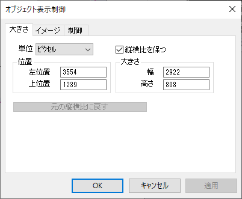
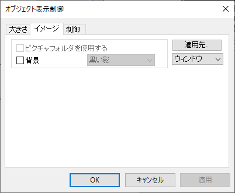
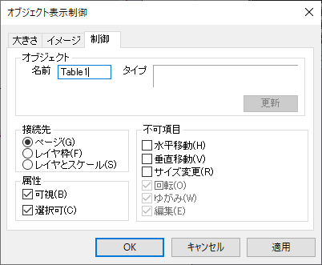

「オブジェクトプロパティ」ダイアログボックス (イメージオブジェクト)
Two-Prop-Dialog
オブジェクトプロパティダイアログボックスを開くには:
- グラフ上の表を選択します。右クリックして、ショートカットメニューからプロパティを選択します。
サイズタブ
- 
単位
位置およびサイズ（下記）の単位を指定します。
縦横比を保つ
このチェックボックスにチェックを付けると縦横比を維持してサイズ変更できます。
位置グループ
テーブルの左と上位置を指定します。単位は、単位ドロップダウンリストから選択します。
サイズグループ
単位ドロップダウンリストで指定された単位で表の幅と高さを指定します。
元のアスペクト比に戻す
このボタンをクリックすると、幅と高さの比が元の縦横比に戻ります。
角度
SVGグラフオブジェクトでのみ使用できます。SVGグラフオブジェクトを回転させる角度を選択または入力します。
イメージタブ
- 
イメージグループ
ピクチャホルダを使用するは利用できません。
選択した表に背景を追加するには、背景 にチェックを入れ、ドロップダウンリストからオプションを選択します。このチェックボックスにチェックが無い場合は、背景は表示されません。
適用先
イメージタブの設定を適用するには、
- 適用先ドロップダウンリストで選択して、設定を適用する範囲を指定します。たとえば、オブジェクトを選択すると、選択したテーブルにのみ背景設定を適用します。
- 適用先ボタンをクリックします。
制御タブ
- 
オブジェクトグループ
名前編集ボックスにオブジェクトの現在の名前が表示されます。 デフォルトのベース名（Tableなど）で開始し、連番を付けることでオブジェクトに名前を付けます。 この名前は変更できます。このオブジェクト名をLabTalkスクリプトで使用して、プログラムでオブジェクトを制御できます。
タイプボックスではオブジェクトの種類が表示されます。これは読み取り専用です。
更新ボタンは、レイアウトに追加されたワークシートオブジェクトで利用できます。このボタンをクリックすると、レイアウトページの表が更新されソースワークシートの最近の変更が反映されます。
接続先グループ
レイヤ操作と軸の再スケールによるオブジェクトの大きさと位置への影響を制御するには、以下のいずれかのラジオボタンを選択します。
- ページ：オブジェクトがページに接続されると、オブジェクトの位置と大きさの設定は、レイヤから独立して行なわれます。 オブジェクトの位置や大きさは、レイヤが移動されたり、サイズ変更されても、また、軸スケールが変更されても、影響を受けません。 ただし、オブジェクトもレイヤに所属していますので、レイヤが削除されるとオブジェクトも消滅します。
- レイヤ枠：オブジェクトがレイヤ枠に接続されると、オブジェクトはレイヤに従って位置付けられます。 レイヤを移動すると、オブジェクトもレイヤと一緒に移動します。 レイヤのサイズを変更すると、オブジェクトもレイヤの大きさに比例してサイズが変更されます。 ただし、軸を再スケールしても、オブジェクトの大きさや位置は変化しません。
- レイヤとスケール：オブジェクトがレイヤとスケールの両方に接続されると、オブジェクトは、その大きさと位置の両方に関してレイヤに関連付けされます。レイヤを移動すると、オブジェクトもレイヤと共に移動します。レイヤのサイズを変更すると、オブジェクトもレイヤの大きさに比例してサイズが変更されます。 また、軸を再スケールしても、オブジェクトの大きさは変化しませんが、同じXY座標となるよう移動します。
属性グループ
- 可視: このボックスにチェックを付けると、オブジェクトが表示され、選択可能になります。チェックを外すと、オブジェクトは非表示になり、選択できません。このようなオブジェクトを表示して編集するには、メニューから編集：編集モードを選択してボタン編集モードにします。ボタン編集モードを終了するには、再度編集：編集モードを選択します。
- 選択可: このボックスにチェックを付けると、オブジェクトが選択可能になります。チェックを外すと、オブジェクトを編集できません。このようなオブジェクトを編集するには、メニューから編集：編集モードを選択してボタン編集モードにします。ボタン編集モードを終了するには、再度編集：編集モードを選択します。
不可項目グループ
このグループではオブジェクトの形状や位置など変更不可にできます。
- 水平移動：チェックを付けると水平方向の移動を無効にします。
- 垂直移動：チェックを付けると垂直方向の移動を無効にします。
- サイズ変更：チェックを付けるとサイズ変更を無効にします。
- 回転: 表オブジェクトではアクセスできません。
- ゆがみ: 表オブジェクトではアクセスできません。
- 編集: 表オブジェクトではアクセスできません。